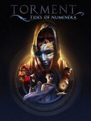

Torment: Tides of Numenera
Torment: Tides of Numenera
Detalles
|  | |
| Tiempo de juego | No Jugado |
| Última actividad | Nunca |
| Añadido | 13/07/2023 14:43:10 |
| Modificado | 13/07/2023 14:44:23 |
| Estado de finalización | Not Played |
| Librería | Steam |
| Fuente | Steam |
| Plataforma | PC (Windows) |
| Fecha de lanzamiento | 27/02/2017 |
| Puntuación de la Comunidad | 68 |
| Puntuación de la Crítica | 81 |
| Puntuación de usuario | |
| Género | Adventure Indie RPG Strategy |
| Desarrollador | inXile Entertainment |
| Editor | inXile Entertainment |
| Característica | Achievements Cloud Saves Partial Controller Support Remote Play On Tablet Single Player |
| Enlaces | Punto de encuentro Discusiones Guías Noticias Página de la tienda PCGamingWiki Logros |
| Tag | Adventure Atmospheric choices-matter CRPG Dark Fantasy Fantasy Female Protagonist great-soundtrack indie Isometric Kickstarter Party-Based RPG RPG Sci-fi Singleplayer Story Rich Strategy Turn-based Turn-Based Combat Turn-Based Tactics |
Descripción
You are born falling from orbit, a new mind in a body once occupied by the Changing God, a being who has cheated death for millennia. If you survive, your journey through the Ninth World will only get stranger… and deadlier.
With a host of strange companions – whose motives and goals may help or harm you – you must escape an ancient, unstoppable creature called the Sorrow and answer the question that defines your existence: What does one life matter?
Torment: Tides of Numenera is the thematic successor to Planescape: Torment, one of the most critically acclaimed and beloved role-playing games of all time. Torment: Tides of Numenera is a single-player, isometric, narrative-driven role-playing game set in Monte Cook’s Numenera universe, and brought to you by the creative team behind Planescape: Torment and the award-winning Wasteland 2.
Features:
With a host of strange companions – whose motives and goals may help or harm you – you must escape an ancient, unstoppable creature called the Sorrow and answer the question that defines your existence: What does one life matter?
Torment: Tides of Numenera is the thematic successor to Planescape: Torment, one of the most critically acclaimed and beloved role-playing games of all time. Torment: Tides of Numenera is a single-player, isometric, narrative-driven role-playing game set in Monte Cook’s Numenera universe, and brought to you by the creative team behind Planescape: Torment and the award-winning Wasteland 2.
Features:
- A Deep, Thematically Satisfying Story. The philosophical underpinnings of Torment drive the game, both mechanically and narratively. Your words, choices, and actions are your primary weapons.
- A World Unlike Any Other. Journey across the Ninth World, a fantastic, original setting, with awe-inspiring visuals, offbeat and unpredictable items to use in and out of battle, and stunning feats of magic. Powered by technology used in the award-winning Pillars of Eternity by Obsidian Entertainment, the Numenera setting by Monte Cook provides endless wonders and impossibly imaginative locations for you to explore.
- A Rich, Personal Narrative. Thoughtful and character-driven, the story is epic in feel but deeply personal in substance, with nontraditional characters and companions whose motivations and desires shape their actions throughout the game.
- Reactivity, Replayability, and the Tides. Your choices matter, and morality in the Ninth World is not a simple matter of “right” and “wrong”. You will decide the fates of those around you, and characters will react to your decisions and reputation. The result is a deeply replayable experience that arises naturally from your actions throughout the game.
- A New Take on Combat. With the Crisis system, combat is more than just bashing your enemies. Plan your way through hand-crafted set-pieces which combine battles with environmental puzzles, social interaction, stealth, and more.